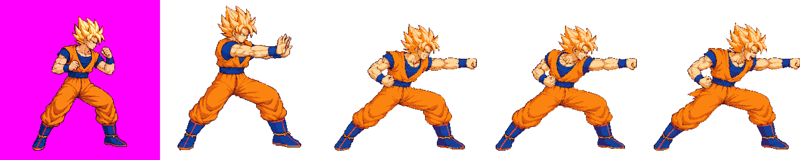
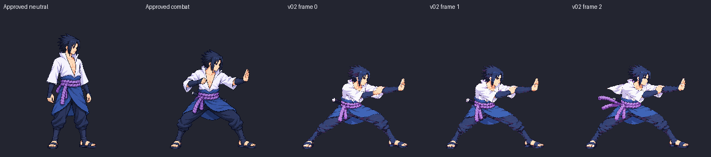

Beam clash struggle poses — round 4
TECHNICAL HOLD · DIAGNOSTIC PACK · NOT APPROVED
Goku ground v01 and Sasuke ground v02 are shown below with technical holds. Goku was calibrated with no new image calls. Sasuke used the three additional calls authorized via Claude relay #14 (six cumulative). Neither candidate is approved. Approved Sasuke v01 and all three air strips remain unchanged.
Goku v01 — calibrated diagnostic, not production
The earlier bodyHeight 233 was copied from the upright beamFire move. Equal-density manual landmarks support a diagnostic 205 (factor 0.338), but the references disagree: candidate head extents are near beamFire and 6–13% above title combat; boot widths match beamFire and exceed title combat. This does not establish the required ±6% match across both approved references. Astra's final audit holds shoulder/chest anatomy and the loop. The raw source stays quarantined.

Diagnostic 48-color packed atlas (SHA-256 991182A67FE71939373DB9758348465141F8C09EBED8264D7185E0A0DAC7140B) · paired animation metadata (SHA-256 D7FFAEACF6EB6DD07C871DE3FD193CDADEA8AC49253D385B9C41B5A6A1FE1F0D) · advisory body sheet. These are scratch-only review outputs, not the official atlas.


Strict quantized pack at 48 colors exited 1 and wrote no atlas or frames: the known head probe lacks version-bound manual QA, and f2 clips right by 1 px. The candidate hand's estimated knuckle-tip anchors are [247,100], [247,100], [253,100] (±2 px); the last is clipped and the anchors exceed the brief's x≤240 contact zone by 7, 7 and 13 px. Full measurements and uncertainty: MEASUREMENTS.md. complete strict-pack log. Final Astra audit: Goku v01 audit. No manual scale pass or approval is claimed.
Sasuke ground v02 — gate passed, anatomy/loop HOLD
User decisions: “Redraw Sasuke ground” (relay #13), then “Up to 3 more calls” (relay #14). The additional three calls are used; cumulative budget is 6/6. Selected attempt 03 is preserved as v02 and remains quarantined. Approved v01 remains live.

Strict quantize-48 candidate pack exited 0. Head ratios vs idle: 0.991 / 0.993 / 1.004. Astra finds improved head/leg scale, but torso remains about 32–35 px vs 39–44 px reference; arm-length confidence is limited. Fingertips remain within the contact zone but move about 15 px across the loop. A gate pass does not clear these holds.
Full Astra audit · Pack log · Body sheet · Versioned source


Frame 0 / 2
70 ms per frame; diagnostic atlas only. No user image approval or production promotion.
Selected attempt 03 — original tool output (2172 × 724)

SHA-256: 9035EBC7B62956461469954A0ABCFA3C5CFA26FC110D76877FBC79BD551A3E98. The source is quarantined in the branch under art/characters/goku/raw/_qa_hold/beamStruggle_v01.png.
Wrapper-emitted payload (2048 × 683)

SHA-256: B0D6379DD5AEA8050DA172E07E03167A1C527A7107CDF670753C19C8A07CD6D5. This is a distinct resized payload. Pixel identity with the 2172 × 724 source is not asserted.
Generation record
The calls attached Goku’s approved idle_approved.png and assigned beamFire_v07.png pose reference. The latter is marked approved in the manifest while its sidecar labels it technical hold; it was used only as the assigned pose reference. Prompts asked for three right-facing ground poses (push, strain, surge), an empty fist, no VFX, and reference-matched anatomy.
| Attempt | Call ID | Output SHA-256 | Selection note |
|---|---|---|---|
| 01 | call_0b73139b56574231939bd49a1cfd5575 | EC2122479AA2155A12FB810F04D81F5793264BF9785A478CEF334A67FDC1452E | Discarded: frame 2 arm/body anatomy and loop were less clear. |
| 02 | call_ef7231793395490baa96f5b14621d868 | A41481D130CCAC3D187864603DED9115057A5DC70D5AFC20C1CD0C6581C34A4E | Discarded: less deep lunge and weaker pose loop. |
| 03 | call_558663b69d644a799bd65d7b01fd9b7b | 9035EBC7B62956461469954A0ABCFA3C5CFA26FC110D76877FBC79BD551A3E98 | Selected: deepest lunge and clearest braced loop. |
Call/output timestamps from the agent session log, UTC: 23:03:17 / 23:03:39; 23:03:43 / 23:03:59; 23:04:12 / 23:04:34. The exact prompts, reference paths, and call record are preserved in the task branch.
Round 3 baseline (superseded calibration)
- The first bodyHeight 233 was a copied upright-beamFire guess. Its strict 48-color pack clipped frames 0–2 by 11/12/18 px; that result motivated the new manual measurement and is not the current diagnostic height.
- Round 4 isolated diagnostic at bodyHeight 205/factor 0.338 still fails strict scale validation and clips f2 by 1 px. It does not change the quarantined source or official atlas.
- Goku automatic head probe is known to misread approved art. The candidate has no version-bound manual scale pass; exact uncertainty and comparator measurements are linked above.
- Front-knuckle positions are now estimated per frame, but exceed the brief contact zone. No hitbox override was authored.
- No production atlas or user approval exists. Astra completed the frozen diagnostic audit with HOLD.
Other round 3 audit status
The parallel Astra audit reports visible PASS for Naruto, Killua, and Gojo ground strips; Sasuke ground anatomy is HOLD. Air-loop holds: Sasuke, Killua, and Gojo; Sasuke also has occluded-length uncertainty. These findings do not certify visual approval. The user retained all three air strips unchanged. Goku diagnostic audit is complete with HOLD; there is no production-pack pass.
Goku diagnostic loop
Full Astra audit · Strict failure log
Frame 0 / 2
70 ms per frame. Diagnostic only; official game sprites unchanged.